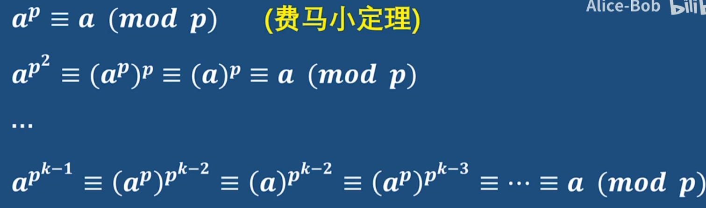
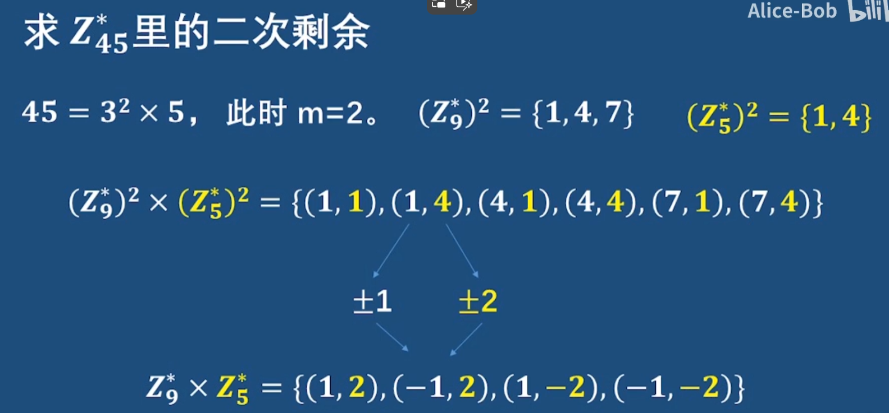
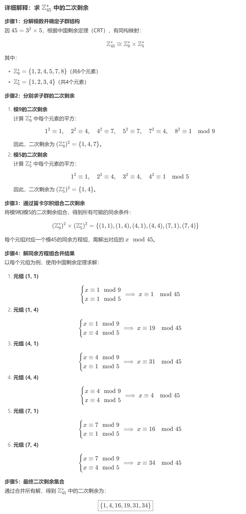

二次剩余
定义
令整数 $a$，$p$ 满足 $(a,p)=1$，若存在整数 $x$ 使得
$$
x^2\equiv a\pmod p
$$
则称 $a$ 为模 $p$ 的二次剩余，否则称 $a$ 为模 $p$ 的二次非剩余。并称$x$为$a$在模$p$下的平方根。
通俗一些，可以认为是求模意义下的 开平方 运算。对于更高次方的开方可参见 k 次剩余。
模$p$下的二次剩余
设$p$是奇素数
设$b \in {Z_p}$，则
$$
b^2 = 1 \iff b = \pm 1 (1,p-1)
$$
证明：
必要性：如果$b=\pm1$，必有$b^2=1$。
充分性：如果$b^2=1$，必有$b^2 \equiv 1 \pmod p$。
所以，$p \mid (b^2-1)$
$\implies p \mid(b-1)(b+1)$
$\implies p \mid(b-1)或p \mid (b+1)$
故而，$b \equiv \pm1 \pmod p$。即$b=\pm 1$。
设$b,c \in {Z_p^}$，则
$$
\begin{aligned}
b^2 = c^2 \iff b = \pm c \
\mid({Z_p^})^2\mid = (p - 1)/2
\end{aligned}
$$
Euler 判别法
对奇素数 $p$ 和满足 $(a,p)=1$ 的整数 $a$，
$$
a^{\frac{p-1}{2}}\equiv\begin{cases}
1 \pmod p, & (\exists x\in\mathbf{Z}),~~a\equiv x^2\pmod p,\
-1 \pmod p, & \text{otherwise}.\
\end{cases}
$$
即对上述的 $p$ 和 $a$，
- $a$ 是 $p$ 的二次剩余当且仅当 $a^{\frac{p-1}{2}}\equiv 1 \pmod p$.
- $a$ 是 $p$ 的二次非剩余当且仅当 $a^{\frac{p-1}{2}}\equiv -1 \pmod p$.
证明：
首先由 Fermat 小定理，有 $a^{p-1}\equiv 1\pmod p$，故
$$
\left(a^{\frac{p-1}{2}}+1\right)\left(a^{\frac{p-1}{2}}-1\right)\equiv 0\pmod p
$$
从而对任意满足 $(a,p)=1$ 的 $a$ 均有 $a^{(p-1)/2}\equiv \pm 1\pmod p$
另外由 $p$ 是奇素数，我们有：
$$
x^{p-1}-a^{\frac{p-1}{2}}={\left(x^2\right)}^{\frac{p-1}{2}}-a^{\frac{p-1}{2}}=(x^2-a)P(x)
$$
其中 $P(x)$ 是某个整系数多项式，进而：
$$
\begin{aligned}
x^p-x&=x\left(x^{p-1}-a^{\frac{p-1}{2}}\right)+x\left(a^{\frac{p-1}{2}}-1\right)\
&=(x^2-a)xP(x)+\left(a^{\frac{p-1}{2}}-1\right)x\
\end{aligned}
$$
由 同余方程的定理 5 可知，$a$ 是模 $p$ 的二次剩余当且仅当 $a^{(p-1)/2}\equiv 1\pmod p$. 进而 $a$ 是模 $p$ 的非二次剩余当且仅当 $a^{(p-1)/2}\equiv -1\pmod p$.
简易证明：
设$t=a^{\frac{p-1}{2}}$，则$t^2=a^{p-1}$。根据Fermat 小定理有，
$$
t^2=a^{\varphi(p)}=1，
$$
所以，$t=\pm 1$，即$a^{\frac{p-1}{2}}=\pm 1$
模$p^k$下的二次剩余
设$p$是奇素数，k是正整数
设$b \in {Z_{p^k}}$，则
$$
b^2 = 1 \iff b = \pm 1 (1,p-1)
$$
证明：
必要性：如果$b=\pm1$，必有$b^2=1$。
充分性：如果$b^2=1$，必有$b^2 \equiv 1 \pmod {p^k}$。
所以，${p^k} \mid (b^2-1)$
$\implies {p^k} \mid(b-1)(b+1)$
$\implies p \mid(b-1)(b+1)$
$\implies p \mid(b-1)或p \mid (b+1)$
$\implies {p^k} \mid(b-1)或{p^k} \mid (b+1)$
故而，$b \equiv \pm1 \pmod {p^k}$。即$b=\pm 1$。
设$b,c \in {Z_{p^k}^*}$，则
$$
\begin{aligned}
b^2 = c^2 \iff b = \pm c \
\mid({Z_{p^k}^*})^2\mid = \varphi(p^k)/2
\end{aligned}
$$
E.g
$$
\begin{aligned}
&\mid({Z^_9}^2) \mid = \frac{\varphi(9)}{2}=\frac{3 \varphi(3)}{2}=\frac{3 \times2}{2}=3 \
&\mid({Z^_{25}}^2) \mid = \frac{\varphi(25)}{2}=\frac{5\varphi(5)}{2}=\frac{5 \times 4}{2}=10
\end{aligned}
$$
判别方法
设$p$是奇素数，$a \in {Z^*_{p^k}}$，则
$$
\begin{aligned}
&①a^{\frac{\varphi(p^k)}{2}} = \pm 1 \
&②a \in (Z^_{p^})^2 \implies a^{\frac{\varphi(p^k)}{2}} = 1 \
&③a \notin (Z^_{p^})^2 \implies a^{\frac{\varphi(p^k)}{2}} = -1
\end{aligned}
$$
- $a$是模$p^k$下二次剩余 $\iff a$是模$p$下二次剩余
证明：
充分性：如果$a \in (Z^_{p^})^2$，则$a \in {Z^*_{p^k}}$，所以$\gcd(a,p)=1$。
且存在$b \in {Z^*_{p^k}}$，使得$b^2 \equiv a \pmod {p^k}$
所以。$b^2 \equiv a \pmod p$
故而，$a \in (Z^*_p)^2$
必要性：若$a \in (Z^_{p^})^2$，假设$a$是模$p^k$下二次非剩余，则
$a^{\frac{\varphi(p^k)}{2}} \equiv -1 \pmod {p^k}$
所以，$a^{\frac{\varphi(p^k)}{2}} \equiv -1 \pmod {p}$
$a^{\frac{p^{k-1}\varphi(p^k)}{2}} \equiv -1 \pmod p$
根据费马小定理，

$a^{\frac{p-1}{2}} \equiv -1 \pmod p$。故而，$a \notin (Z^*_p)^2$，矛盾！
模$n$下的二次剩余
中国剩余映射（Chinese Remainder Mapping）
定义：
中国剩余映射是一种从整数集合Z到多个小模数组成的笛卡尔积Z/n₁Z × Z/n₂Z × … × Z/nkZ的环同态映射。其前提条件是这些模数$n_1, n_2, \dots, n_k$两两互质，即任意两个不同模数之间的最大公约数为1。
结构：
中国剩余映射通常写作CRT(n₁, n₂, …, nk)，它通过将整数a分别取模于每个ni，得到一个元组(a mod n₁, a mod n₂, …, a mod nk)。当n = n₁×n₂×…×nk时，由于模数两两互质，根据中国剩余定理，这种映射是可逆的，即存在唯一的一个整数a在模n意义下与该元组对应。
数学表达：
对于一个整数a，有：
$$
CRT: a \implies (a \mod n_1, a \mod n_2, \dots, a \mod n_k)
$$
反之，当给定一个元组(a₁, a₂, …, ak)，其中每个ai满足0 ≤ ai < ni，且n = ∏ni，则存在唯一的整数a mod n使得对于所有i，有$a \equiv a_i \pmod {n_i}$。
设$n>1$是奇数，且$n=p_1^{k_1} \times \dots \times p_m^{k_m}$
$$
\begin{aligned}
&a \in (Z_n^)^2 \iff a_i \in (Z_{p_i^{k_i}}^)^2,i = 1, \dots,m \
\end{aligned}
$$
证明：
充分性：
如果$a \in (Z_n^)^2$，设$a=b^2,b \in Z_n^$。
根据中国剩余映射$\tau (b)= (b_1,\dots,b_m)$，则$\tau(b^2)=(b_1^2,\dots,b_m^2)$
于是有，$(a_1,\dots,a_m)=\tau(a)=\tau(b^2)=(b_1^2,\dots,b_m^2)$。
所以，$a_i = b_i^2,i=1,\dots,m$，即$a_i$是模$p_i^{k_i}$下的二次剩余：$a_i \in (Z^*_{p^{k_i}_i})^2$
必要性：
若$a_i \in (Z^_{p^{k_i}i})^2，i=1,\dots,m$，设$a_i = b_i^2，b_i \in Z{p_i^{k_i}}^$。
设$b:= \tau^{-1}(b_i,\dots,b_m)$，则$\tau(b^2)=(b_1^2,\dots,b_m^2)=(a_1,\dots,a_m)=\tau(a)$。
故而，$\tau(b^2)=\tau(a)$
因为中国剩余映射是双射，所以$a=b^2$
故而$a$是模$n$下的二次剩余：$a \in (Z_n^*)^2$
$$
\begin{aligned}
&\mid (Z_n^)^2 \mid = \frac{\varphi(n)}{2^m} \
&设a \in (Z_n^)^2,则 a恰好有2^m个平方根
\end{aligned}
$$
E.g：
$Z^*_{45}$里的二次剩余数量
$$
\begin{aligned}
45 = 3^2\times 5，&此时m=2。二次剩余的数量为\
&\mid(Z^*_{45})^2\mid = \frac{\varphi(45)}{2^2}=6
\end{aligned}
$$


模$p$下$-1$的平方根
| 二次剩余数量 | 二次剩余平方根 | |
|---|---|---|
| $p$ | $\frac{\varphi(p)}{2}$（集合大小的一半） | 2个 |
| $p^k$ | $\frac{\varphi(p^k)}{2}$（集合大小的一半） | 2个 |
| $n$ | $\frac{\varphi(n)}{2^m}$（集合大小的$\frac{1}{2^m}$） | $2^m$个 |
判断-1（p-1）是模$p$的二次剩余
- $p \equiv 1 \pmod 4 \iff -1 \in (Z_p^*)^2$
E.g:
$p=13$，$-1 \in (Z_{13}^*)^2$，因为$13 \equiv 1 \pmod 4$
证明：
$$
\begin{aligned}
p \equiv 1 \pmod 4 &\iff 4\mid(p-1) \
&\iff 2\mid \frac{p-1}{2} \
&\iff \frac{p-1}{2}是偶数 \
&\iff (-1)^{\frac{p-1}{2}} \equiv 1 \pmod p \
&\iff -1 \in (Z_p^*)^2
\end{aligned}
$$
$(-1)^{\frac{13-1}{2}} \equiv 1 \pmod {13}$（欧拉公式验证）
证明：
$$
\begin{aligned}
p \equiv 3 \pmod 4 &\iff p=4q+3 \
&\iff p-1 = 4q+2 \
&\iff \frac{p-1}{2}=2q+1 是个奇数 \
&\iff (-1)^{\frac{p-1}{2}} \equiv -1 \pmod p \
&\iff -1 \in Z^_p / (Z_p^)^2
\end{aligned}
$$
模$p$下构造-1的平方根
$$
\begin{aligned}
&设p \equiv 1 \pmod 4 , c \in Z^_p / (Z_p^)^2 \
&令 b:= c^{\frac{p-1}{4}} \pmod p，则 b^2 \equiv -1 \pmod p \
\
& b^2 \equiv (c^{\frac{p-1}{4}})^2 \equiv c^{\frac{p-1}{2}} \equiv -1 \pmod p
\end{aligned}
$$
E.g: $p=13，c=2 \in Z^_p / (Z_p^)^2$
$$
\begin{aligned}
&b:= c^{\frac{13-1}{4}} \equiv 2^{\frac{13-1}{3}} \equiv 2^3 \equiv 8 \pmod {13} \
& 8^2 \equiv 64 \equiv 12 \equiv -1 \pmod {13}
\end{aligned}
$$
费马二平方定理（Fermat’s two squares theorem）
设$p$是奇素数，则
$p \equiv 1 \pmod 4 \iff p=s^2+t^2 ,s,t \in Z$
E.g:
$13 = 2^2 + 3^2$
$5=1^2+2^2$
$17=1^2+4^2$
连分数
连分数（continued fraction）本身只是一种形式记号。
“有限连分数”
对于数列 ${a_k}_{i=0}^n$，连分数 $[a_0,a_1,\cdots,a_n]$ 表示展开式
$$
x = a_0+\dfrac{1}{a_1+\dfrac{1}{a_2+\dfrac{1}{\cdots+\dfrac{1}{a_n}}}}.
$$
连分数有意义，当且仅当对应的展开式有意义。这些 $a_k$ 称为连分数的 **项**（term）或 **系数**（coefficient）。
“记号”
更一般的连分数允许展开式中的分子不恒为 $1$，相应的连分数记号也需要修改，这超出了本文的范畴。另外，有些文献中会将第一个逗号「$,$」写作分号「$;$」，这与本文的记号在含义上没有差异。
当然，连分数还可以推广到无穷数列的情形。
“无限连分数”
对于无穷数列 ${a_k}_{i=0}^\infty$，连分数 $[a_0,a_1,\cdots]$ 表示极限
$$
x = \lim_{k\rightarrow\infty} x_k = \lim_{k\rightarrow\infty} [a_0,a_1,\cdots,a_k].
$$
连分数有意义，当且仅当对应的极限有意义。其中，$x_k=[a_0,a_1,\cdots,a_k]$ 称为 $x$ 的第 $k$ 个 **渐近分数**（convergent）或 **收敛子**，而 $r_k=[a_k,a_{k+1},\cdots]$ 称为 $x$ 的第 $k$ 个 **余项** 或 **完全商**（complete quotient）。相应地，项 $a_k$ 有时也称为第 $k$ 个 **部分商**（partial quotient）。
简单连分数
数论中，主要考虑连分数的项都是整数的情形。
“简单连分数”
对于连分数 $[a_0,a_1,\cdots]$，如果 $a_0$ 是整数，$a_1,a_2,\cdots$ 都是正整数，则称它为 简单连分数（simple continued fraction），也简称 连分数。如果数列 ${a_i}$ 有限，则称为 有限（简单）连分数；否则称为 无限（简单）连分数。而且，$a_0$ 称为它的 整数部分（integer part）。
除非特别说明，本文提到的连分数都指的是简单连分数。可以证明，无限的简单连分数必然是收敛的，而且简单连分数的余项也一定是正的。
连分数有如下基本性质：
“性质”
设实数 $x=[a_0,a_1,a_2,\cdots]$。那么，成立如下性质：
1. 对于任意 $k\in\mathbf Z$，有 $x+k=[a_0+k,a_1,a_2,\cdots]$；
2. 对实数 $x>1$，有 $a_0>0$，且它的倒数 $x^{-1}=[0,a_0,a_1,a_2,\cdots]$。
有限连分数对应的是有理数。每个有理数都有且仅有两种方式可以表示成连分数，长度必然一奇一偶。这两种方式唯一的区别在于最后一项是否为 $1$，即
$$
x = [a_0,a_1,\cdots,a_n] = [a_0,a_1,\cdots,a_n-1,1].
$$
这两个连分数称为有理数 $x$ 的 连分数表示（continued fraction representation）。其中，末项不为一的称为标准表示，末项为一的称为非标准表示。[^one-representation]
“例子”
有理数 $x=\dfrac{5}{3}$ 的连分数表示为
$$
\begin{aligned}
x = [1,1,1,1] &= 1+\dfrac{1}{1+\dfrac{1}{1+\dfrac{1}{1}}},\
x = [1,1,2] &= 1+\dfrac{1}{1+\dfrac{1}{2}}.
\end{aligned}
$$
无限连分数对应的是无理数。而且，每个无理数仅有唯一的方式表示为连分数，称为无理数的连分数表示。
连分数表示的求法
要求某个实数 $x$ 的连分数表示，只需要注意到它的余项 $r_k$ 如果不是整数，就一定满足
$$
r_k = [a_k,a_{k+1},\cdots] = [a_k,r_{k+1}] = a_k + \dfrac{1}{r_{k+1}}.
$$
而且，$r_{k+1}>1$。因此，可以从 $r_0=x$ 开始递归地计算
$$
a_k = \lfloor r_k\rfloor,\ r_{k+1} = \dfrac{1}{r_k-a_k}.
$$
这个过程产生的数列 ${a_k}$ 总是唯一确定的，除非某个余项 $r_k$ 成为整数。如果出现了 $r_k$ 是整数，则说明过程应当终止，可以选择输出相应的标准表示或者非标准表示。
在算法竞赛中，往往处理的都是有理数 $x=\dfrac{p}{q}$ 的情形。此时，每个余项 $r_k$ 都是有理数 $\dfrac{p_k}{q_k}$，而且对于 $k>0$，因为 $r_k>1$，就总有 $p_k>q_k$。具体计算上述递推关系，可以发现
$$
a_k = \left\lfloor\frac{p_k}{q_k}\right\rfloor,\ r_{k+1} = \dfrac{1}{r_k-a_k} = \dfrac{q_k}{p_k-a_kq_k} = \dfrac{q_k}{p_k\bmod q_k}.
$$
此时的计算过程实际上是对 $p$ 和 $q$ 做 辗转相除法。这也说明，对于有理数 $r=\dfrac{p}{q}$，连分数表示的长度是 $O(\log\min{p, q})$ 的。计算有理数 $\dfrac{p}{q}$ 的复杂度也是 $O(\log\min{p, q})$ 的。